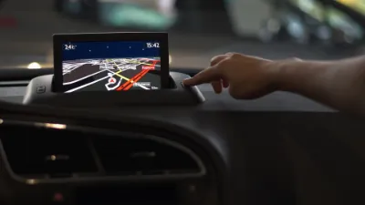

Aviso importante: Este sitio web es un recurso informativo independiente y no está afiliado ni asociado con el gobierno de México o cualquier entidad gubernamental oficial. La información proporcionada tiene fines educativos e informativos únicamente.
Cómo funcionan los autos autónomos y cuándo los veremos en México
Los vehículos autónomos representan una de las revoluciones más significativas en la historia del transporte. Estos automóviles, capaces de circular sin intervención humana, prometen transformar radicalmente nuestra forma de movernos, mejorando la seguridad vial, optimizando el tráfico y cambiando nuestra relación con el tiempo que pasamos en los desplazamientos. En este artículo, explicamos cómo funciona esta tecnología y analizamos cuándo podríamos ver estos vehículos circulando por las calles de México.
¿Qué es un vehículo autónomo?
Un vehículo autónomo es aquel capaz de detectar su entorno y operar sin intervención humana. Utilizando una combinación de sensores, cámaras, radar, lidar (detección por luz y distancia), GPS avanzado e inteligencia artificial, estos vehículos pueden interpretar la información sensorial para identificar rutas de navegación apropiadas, obstáculos y señalización relevante.
La Society of Automotive Engineers (SAE) ha establecido seis niveles de autonomía:
- Nivel 0 (Sin automatización): El conductor humano controla todas las tareas de conducción.
- Nivel 1 (Asistencia al conductor): El vehículo puede asistir con la dirección O la aceleración/frenado, pero no ambas simultáneamente.
- Nivel 2 (Automatización parcial): El vehículo puede controlar tanto la dirección como la aceleración/frenado en ciertas circunstancias, pero el conductor debe permanecer atento y listo para tomar el control.
- Nivel 3 (Automatización condicional): El vehículo puede realizar todas las tareas de conducción bajo ciertas condiciones, pero el conductor debe estar disponible para tomar el control cuando se le solicite.
- Nivel 4 (Alta automatización): El vehículo puede realizar todas las tareas de conducción en condiciones específicas sin intervención humana.
- Nivel 5 (Automatización completa): El vehículo puede realizar todas las tareas de conducción en todas las condiciones sin intervención humana.
Actualmente, los vehículos comerciales más avanzados se encuentran entre los niveles 2 y 3, con algunas pruebas limitadas de nivel 4 en entornos controlados.
Tecnologías clave en los vehículos autónomos
Sensores y sistemas de percepción
Los vehículos autónomos utilizan múltiples sistemas para "ver" y comprender su entorno:
- Cámaras: Proporcionan información visual detallada, incluyendo señales de tráfico, marcas viales y otros vehículos.
- Radar: Utiliza ondas de radio para detectar objetos y medir su velocidad y distancia, funcionando bien incluso en condiciones de poca visibilidad.
- Lidar (Light Detection and Ranging): Emite pulsos láser para crear mapas 3D precisos del entorno, permitiendo una detección detallada de objetos.
- Sensores ultrasónicos: Utilizados principalmente para detección de objetos cercanos, como al estacionar.
- GPS y sistemas de navegación: Proporcionan información de posicionamiento y rutas.
Inteligencia artificial y aprendizaje automático
El corazón de un vehículo autónomo es su sistema de inteligencia artificial, que procesa toda la información de los sensores para tomar decisiones:
- Reconocimiento de objetos: Identifica vehículos, peatones, ciclistas, señales de tráfico y otros elementos relevantes.
- Predicción de comportamiento: Anticipa las acciones de otros usuarios de la vía.
- Toma de decisiones: Determina cómo responder a cada situación (frenar, acelerar, girar, etc.).
- Aprendizaje continuo: Mejora con el tiempo a medida que se expone a más situaciones y escenarios.
Conectividad V2X (Vehicle-to-Everything)
Los sistemas de comunicación V2X permiten que los vehículos intercambien información con:
- Otros vehículos (V2V): Compartiendo datos sobre posición, velocidad e intenciones.
- Infraestructura (V2I): Recibiendo información de semáforos, señales de tráfico inteligentes o condiciones de la carretera.
- Peatones (V2P): Detectando smartphones u otros dispositivos para mejorar la seguridad.
- La red (V2N): Accediendo a información en la nube sobre tráfico, clima o actualizaciones de mapas.
Beneficios potenciales de los vehículos autónomos
Seguridad vial
Se estima que el 94% de los accidentes de tráfico son causados por errores humanos. Los vehículos autónomos podrían reducir drásticamente esta cifra al eliminar factores como:
- Conducción bajo los efectos del alcohol o drogas
- Distracciones (uso del teléfono, etc.)
- Fatiga o somnolencia
- Exceso de velocidad
- Decisiones impulsivas o agresivas
Eficiencia del tráfico
Los vehículos autónomos podrían optimizar el flujo de tráfico mediante:
- Mantenimiento de distancias óptimas entre vehículos
- Aceleración y frenado más suaves y coordinados
- Rutas optimizadas basadas en datos de tráfico en tiempo real
- Reducción del "efecto acordeón" que causa congestiones
Inclusión y accesibilidad
Esta tecnología podría proporcionar movilidad independiente a:
- Personas mayores
- Personas con discapacidades
- Personas que no pueden o no desean conducir
Sostenibilidad
Los vehículos autónomos podrían contribuir a la sostenibilidad mediante:
- Conducción más eficiente en términos de consumo de combustible
- Integración con tecnologías eléctricas y de energías limpias
- Reducción de la necesidad de espacios de estacionamiento en áreas urbanas
- Fomento de modelos de movilidad compartida
Desafíos para la implementación
Desafíos tecnológicos
- Condiciones climáticas adversas: La lluvia intensa, niebla o nieve pueden afectar el funcionamiento de sensores como cámaras y lidar.
- Situaciones imprevistas: Eventos raros o únicos que no están en la base de datos de entrenamiento del sistema.
- Infraestructura vial deficiente: Carreteras en mal estado, señalización poco clara o ausente.
- Ciberseguridad: Protección contra hackeos o manipulaciones maliciosas.
Desafíos regulatorios
- Marco legal: Adaptación de leyes de tránsito para contemplar vehículos sin conductor.
- Responsabilidad en accidentes: Determinación de quién es responsable en caso de accidente (fabricante, propietario, ocupante, etc.).
- Estándares de seguridad: Establecimiento de criterios para certificar que un vehículo autónomo es seguro para circular.
- Privacidad de datos: Regulación sobre la recopilación y uso de los datos generados por estos vehículos.
Desafíos sociales y éticos
- Aceptación pública: Confianza de la sociedad en la tecnología autónoma.
- Impacto laboral: Efectos en empleos relacionados con la conducción (taxistas, camioneros, etc.).
- Dilemas éticos: Programación de decisiones en situaciones inevitables de peligro (el llamado "problema del tranvía").
- Convivencia con vehículos tradicionales: Período de transición con mezcla de vehículos autónomos y conducidos por humanos.
Situación actual en México
México se encuentra en las etapas iniciales de adaptación a la tecnología de vehículos autónomos:
Marco regulatorio
Actualmente, México no cuenta con una legislación específica para vehículos autónomos. La Ley Federal de Caminos, Puentes y Autotransporte Federal y los reglamentos de tránsito estatales y municipales están diseñados bajo la premisa de que hay un conductor humano responsable del vehículo.
Sin embargo, existen iniciativas para comenzar a adaptar el marco legal:
- La Secretaría de Comunicaciones y Transportes (SCT) ha iniciado estudios para evaluar los cambios necesarios en la normativa.
- Algunas universidades y centros de investigación están colaborando con autoridades para desarrollar propuestas regulatorias.
Pruebas y proyectos piloto
Aunque limitadas, ya existen algunas iniciativas:
- Pruebas controladas en campus universitarios y centros de investigación.
- Proyectos piloto en zonas industriales privadas.
- Colaboraciones entre empresas tecnológicas internacionales y entidades mexicanas para evaluar la viabilidad de la tecnología en el contexto local.
Infraestructura y desafíos específicos
México enfrenta retos particulares para la implementación de vehículos autónomos:
- Calidad variable de las vías: Desde autopistas modernas hasta caminos rurales sin pavimentar.
- Señalización inconsistente: Variación en la calidad y presencia de señales de tránsito.
- Comportamientos de tráfico únicos: Prácticas de conducción locales que pueden ser difíciles de predecir para los sistemas autónomos.
- Brecha digital: Acceso desigual a tecnologías de conectividad necesarias para el funcionamiento óptimo de estos vehículos.
¿Cuándo veremos vehículos autónomos en México?
La implementación probablemente seguirá un enfoque gradual:
Corto plazo (2025-2030)
- Mayor penetración de vehículos con sistemas avanzados de asistencia al conductor (nivel 2).
- Primeras pruebas piloto de vehículos de nivel 3 en entornos controlados y rutas específicas.
- Desarrollo inicial de marcos regulatorios.
Mediano plazo (2030-2035)
- Implementación limitada de vehículos de nivel 4 en rutas predefinidas y bajo condiciones específicas.
- Servicios de transporte autónomo en zonas urbanas seleccionadas (shuttles, taxis).
- Regulación más completa para vehículos autónomos.
Largo plazo (2035-2045)
- Adopción más amplia de vehículos de nivel 4 y primeros vehículos de nivel 5.
- Integración con sistemas de transporte público.
- Transformación gradual de la infraestructura urbana para adaptarse a la nueva movilidad.
Es importante señalar que esta implementación no será uniforme en todo el país. Las grandes ciudades como Ciudad de México, Monterrey y Guadalajara probablemente liderarán la adopción, mientras que las zonas rurales y con infraestructura menos desarrollada experimentarán una transición más lenta.
Conclusión
Los vehículos autónomos representan una revolución tecnológica que promete transformar fundamentalmente nuestra forma de movernos. Si bien México enfrenta desafíos específicos para su implementación, el avance global de esta tecnología inevitablemente llegará al país, trayendo consigo potenciales beneficios en seguridad vial, eficiencia del tráfico y accesibilidad.
La clave para una transición exitosa será el desarrollo de un marco regulatorio adecuado, la inversión en infraestructura, la formación de talento especializado y la colaboración entre sector público, privado y académico. Con estos elementos, México podrá aprovechar las oportunidades que ofrece esta tecnología mientras aborda los desafíos específicos de su contexto.
¿Estás preparado para un futuro donde los vehículos se conduzcan solos? La revolución de la movilidad autónoma ya está en marcha, y aunque tomará tiempo verla completamente implementada en las calles mexicanas, su llegada es solo cuestión de tiempo.
GPS y sistemas de navegación: cómo han revolucionado el transporte

Los sistemas de posicionamiento global (GPS) y las tecnologías de navegación han transformado radicalmente la forma en que nos desplazamos. Lo que comenzó como una tecnología militar se ha convertido en una herramienta indispensable para millones de personas en todo el mundo. En este artículo, exploramos la historia, funcionamiento e impacto de estos sistemas en la movilidad moderna.
Historia del GPS: de la Guerra Fría a nuestros bolsillos
El desarrollo del GPS tiene sus raíces en la carrera espacial y la Guerra Fría:
- 1957-1960s: El lanzamiento del Sputnik por la Unión Soviética inspira a científicos estadounidenses a descubrir que podían rastrear satélites desde tierra midiendo el "efecto Doppler" de sus señales de radio.
- 1973: El Departamento de Defensa de EE.UU. inicia el proyecto NAVSTAR GPS (Navigation System with Timing and Ranging), combinando varios sistemas experimentales previos.
- 1978: Lanzamiento del primer satélite GPS operativo.
- 1983: Tras el derribo accidental del vuelo 007 de Korean Airlines por entrar en espacio aéreo soviético debido a un error de navegación, el presidente Reagan anuncia que el GPS estará disponible para uso civil.
- 1995: El sistema alcanza plena capacidad operativa con 24 satélites.
- 2000: El presidente Clinton ordena eliminar la "Disponibilidad Selectiva", una degradación intencional de la señal civil, mejorando la precisión de 100 metros a 20 metros.
- 2005-presente: Proliferación de dispositivos GPS en teléfonos móviles, vehículos y otros dispositivos cotidianos.
¿Cómo funciona el GPS?
El sistema GPS se compone de tres segmentos principales:
1. Segmento espacial
Consiste en una constelación de al menos 24 satélites (actualmente hay más de 30) que orbitan la Tierra a unos 20,200 km de altura. Estos satélites están distribuidos en seis planos orbitales para garantizar que al menos cuatro satélites sean visibles desde cualquier punto de la Tierra.
2. Segmento de control
Una red global de estaciones terrestres que monitorean y mantienen los satélites, verificando sus órbitas y relojes atómicos, y enviando correcciones cuando es necesario.
3. Segmento de usuario
Los receptores GPS (en teléfonos, navegadores, vehículos, etc.) que captan las señales de los satélites y calculan la posición.
El principio básico de funcionamiento es la trilateración:
- Cada satélite transmite constantemente su posición y la hora exacta según su reloj atómico.
- El receptor GPS capta estas señales y calcula la distancia a cada satélite basándose en el tiempo que tardó la señal en llegar.
- Conociendo la distancia a al menos cuatro satélites, el receptor puede determinar su posición tridimensional (latitud, longitud y altitud) y sincronizar su reloj.
Más allá del GPS: sistemas globales de navegación por satélite
Aunque "GPS" se ha convertido en un término genérico, existen varios sistemas globales de navegación por satélite (GNSS):
- GPS (EE.UU.): El sistema original y más utilizado.
- GLONASS (Rusia): Desarrollado por la Unión Soviética, alcanzó cobertura global en 1996, sufrió degradación y fue restaurado completamente en 2011.
- Galileo (Unión Europea): Sistema civil que comenzó operaciones iniciales en 2016 y se espera que alcance plena capacidad operativa en 2025.
- BeiDou/Compass (China): Completó su constelación global en 2020.
- NavIC (India): Sistema regional que cubre India y áreas circundantes.
- QZSS (Japón): Sistema regional que complementa el GPS en la región de Asia-Pacífico.
Los dispositivos modernos suelen ser compatibles con múltiples sistemas GNSS, lo que mejora la precisión y confiabilidad.
Evolución de los sistemas de navegación
Los sistemas de navegación han evolucionado significativamente desde los primeros receptores GPS:
Primera generación: navegadores dedicados
- Dispositivos independientes con mapas preinstalados
- Interfaces sencillas con instrucciones básicas
- Actualizaciones de mapas manuales y generalmente de pago
- Precisión limitada (10-20 metros)
Segunda generación: navegación en smartphones
- Aplicaciones como Google Maps, Waze, Apple Maps
- Mapas actualizados constantemente a través de internet
- Información de tráfico en tiempo real
- Integración con búsqueda de lugares y reseñas
- Navegación multimodal (coche, transporte público, a pie, bicicleta)
Tercera generación: navegación conectada e inteligente
- Sistemas integrados en vehículos con conectividad a internet
- Navegación predictiva basada en hábitos y preferencias
- Integración con asistentes de voz
- Realidad aumentada para visualización de rutas
- Alta precisión (1-3 metros) con tecnologías como RTK (Real-Time Kinematic)
- Integración con sistemas de asistencia a la conducción y vehículos autónomos
Impacto en el transporte y la movilidad
Los sistemas de navegación han transformado múltiples aspectos del transporte:
Transporte personal
- Reducción del estrés: Menor preocupación por perderse o tomar rutas incorrectas.
- Optimización de rutas: Ahorro de tiempo y combustible al encontrar caminos más eficientes.
- Exploración facilitada: Mayor confianza para visitar lugares nuevos o poco familiares.
- Evitación de tráfico: Capacidad para eludir congestiones y accidentes en tiempo real.
Transporte público y compartido
- Planificación de rutas: Información precisa sobre horarios y conexiones.
- Servicios bajo demanda: Plataformas como Uber o Didi dependen fundamentalmente del GPS.
- Gestión de flotas: Optimización de rutas para autobuses, taxis y servicios de entrega.
- Información al usuario: Tiempos de llegada precisos y ubicación de vehículos en tiempo real.
Logística y transporte de mercancías
- Seguimiento de envíos: Visibilidad en tiempo real de la ubicación de mercancías.
- Optimización de rutas: Reducción de costos y tiempos de entrega.
- Gestión de cadenas de suministro: Mayor previsibilidad y eficiencia.
- Análisis de patrones: Mejora continua basada en datos históricos de rutas y tiempos.
GPS y navegación en México
En México, los sistemas de navegación han tenido un impacto particularmente significativo:
Desafíos específicos
- Nomenclatura de calles inconsistente: En muchas áreas, especialmente en zonas rurales o de crecimiento informal.
- Cambios rápidos en infraestructura: Nuevas vías, pasos a desnivel y modificaciones que requieren actualizaciones frecuentes.
- Zonas sin cobertura: Áreas remotas donde la señal GPS puede ser menos precisa o las actualizaciones de mapas menos frecuentes.
- Información informal: Rutas alternativas, atajos y variantes locales que no siempre están documentadas oficialmente.
Soluciones y adaptaciones
- Mapeo colaborativo: Plataformas como Waze han tenido gran éxito gracias a la participación de usuarios que actualizan información en tiempo real.
- Puntos de referencia: Los sistemas de navegación en México a menudo utilizan puntos de referencia conocidos además de direcciones formales.
- Integración con servicios locales: Conexión con sistemas de transporte público como Metrobús o información sobre retenes y controles de seguridad.
- Funciones de seguridad: Opciones para evitar zonas consideradas inseguras o con alta incidencia de delitos.
El futuro de la navegación
Los sistemas de navegación continúan evolucionando hacia:
- Mayor precisión: Tecnologías como GPS de banda dual y corrección RTK permiten precisión centimétrica.
- Navegación en interiores: Soluciones para espacios donde la señal GPS no llega, como centros comerciales o estacionamientos subterráneos.
- Integración con realidad aumentada: Superposición de indicaciones de navegación sobre imágenes del mundo real.
- Personalización avanzada: Rutas adaptadas a preferencias específicas (escénicas, económicas, ecológicas) y patrones de conducción individuales.
- Navegación para vehículos autónomos: Sistemas de alta precisión y confiabilidad para permitir la conducción sin intervención humana.
- Integración con Internet de las Cosas: Comunicación con semáforos, señales de tráfico y otros elementos de infraestructura inteligente.
Conclusión
Los sistemas GPS y de navegación han pasado de ser una tecnología militar especializada a una herramienta esencial en nuestra vida cotidiana en apenas unas décadas. Su impacto en el transporte ha sido revolucionario, cambiando fundamentalmente cómo planificamos nuestros desplazamientos, optimizamos rutas y experimentamos la movilidad.
En México, como en el resto del mundo, estas tecnologías continúan adaptándose a las necesidades y características locales, ofreciendo soluciones cada vez más precisas, actualizadas y útiles que seguirán mejorando nuestra experiencia de movilidad.
Lo que es seguro es que ya no concebimos la movilidad sin estas herramientas que, literalmente, han puesto el mundo en nuestras manos.
Cómo se crean los mapas de carreteras con tecnología satelital

Los mapas de carreteras modernos son obras maestras de tecnología, precisión y datos masivos. Lejos quedaron los días de los mapas de papel que se desactualizaban rápidamente. Hoy, gracias a la tecnología satelital y otros avances, disponemos de representaciones digitales detalladas y constantemente actualizadas de la red vial global. En este artículo, exploramos el fascinante proceso de creación de estos mapas que guían nuestros desplazamientos diarios.
La revolución de la cartografía digital
La cartografía ha experimentado una transformación radical en las últimas décadas:
- Años 1970-1980: Primeros sistemas de información geográfica (GIS) computarizados, principalmente para uso militar y gubernamental.
- Años 1990: Desarrollo de los primeros sistemas de navegación para automóviles con mapas digitales básicos almacenados en CD-ROM.
- 2000-2005: Lanzamiento de Google Maps y otros servicios de mapas en línea, democratizando el acceso a la cartografía digital.
- 2005-presente: Integración de imágenes satelitales de alta resolución, vista a nivel de calle, información en tiempo real y contribuciones de usuarios.
Fuentes de datos para la cartografía vial moderna
La creación de mapas de carreteras precisos requiere combinar múltiples fuentes de información:
1. Imágenes satelitales
Los satélites de observación terrestre proporcionan imágenes que sirven como base fundamental:
- Satélites comerciales: Como WorldView, GeoEye o Pléiades, que ofrecen resoluciones de hasta 30 cm por píxel.
- Satélites públicos: Como la serie Landsat o Sentinel, con resoluciones menores pero cobertura global y acceso gratuito.
- Frecuencia de actualización: Las áreas urbanas principales pueden actualizarse varias veces al año, mientras que las zonas rurales con menos frecuencia.
Estas imágenes permiten identificar nuevas carreteras, cambios en la infraestructura y verificar la precisión de los mapas existentes.
2. Datos LiDAR aéreos
El LiDAR (Light Detection and Ranging) utiliza pulsos láser desde aviones o drones para crear modelos 3D precisos:
- Proporciona información sobre elevación, pendientes y características físicas de las carreteras.
- Permite detectar puentes, túneles y pasos a desnivel con gran precisión.
- Ayuda a determinar el ancho exacto de las vías y el número de carriles.
3. Vehículos de mapeo móvil
Flotas especializadas de vehículos equipados con múltiples sensores:
- Cámaras de 360° que capturan imágenes para vistas a nivel de calle.
- Sistemas LiDAR que generan nubes de puntos 3D del entorno.
- Receptores GNSS de alta precisión para georreferenciación exacta.
- Sensores adicionales para detectar señalización, marcas viales y condiciones del pavimento.
Empresas como Google, TomTom, HERE y Mapbox mantienen flotas de estos vehículos que recorren constantemente las carreteras del mundo.
4. Datos gubernamentales y oficiales
Información proporcionada por autoridades viales y organismos oficiales:
- Registros de nuevas construcciones y modificaciones de infraestructura.
- Información sobre sentidos de circulación, restricciones y límites de velocidad.
- Datos sobre clasificación de vías (autopistas, carreteras secundarias, etc.).
- Nomenclatura oficial de calles y carreteras.
5. Contribuciones de usuarios y crowdsourcing
Información proporcionada por los propios usuarios de los mapas:
- Reportes de errores, cambios o nuevas construcciones.
- Datos de tráfico anónimos recopilados de millones de dispositivos móviles.
- Proyectos colaborativos como OpenStreetMap, donde voluntarios mapean activamente su entorno.
- Información sobre puntos de interés, condiciones temporales o incidentes.
El proceso de creación de mapas digitales
Convertir todos estos datos en mapas precisos y útiles implica varios pasos:
1. Adquisición de datos
- Captura de imágenes satelitales y programación de actualizaciones.
- Planificación de rutas para vehículos de mapeo móvil.
- Establecimiento de acuerdos con fuentes oficiales de datos.
- Implementación de sistemas para recibir contribuciones de usuarios.
2. Procesamiento y extracción de características
- Detección automática: Algoritmos de inteligencia artificial identifican carreteras, intersecciones, puentes y otros elementos en imágenes satelitales y datos LiDAR.
- Vectorización: Conversión de imágenes raster a datos vectoriales que representan la red vial.
- Reconocimiento de señales: Sistemas de visión por computadora que identifican señales de tráfico, semáforos y marcas viales en imágenes a nivel de calle.
- Verificación humana: Operadores especializados revisan y corrigen los resultados de los procesos automatizados.
3. Integración y estructuración de datos
- Creación de topología: Establecimiento de conexiones lógicas entre segmentos de carretera (qué conecta con qué).
- Atribución: Asignación de propiedades a cada elemento (tipo de vía, nombre, sentido, restricciones, etc.).
- Geocodificación: Vinculación de direcciones postales con coordenadas geográficas.
- Creación de grafos de enrutamiento: Estructuras de datos optimizadas para calcular rutas eficientemente.
4. Control de calidad
- Verificación de consistencia lógica (por ejemplo, que no haya calles desconectadas).
- Comprobación de precisión posicional comparando con datos de referencia.
- Validación de atributos (nombres correctos, restricciones válidas, etc.).
- Pruebas de enrutamiento para detectar problemas en el cálculo de rutas.
5. Actualización y mantenimiento
- Implementación de ciclos de actualización regulares para diferentes tipos de datos.
- Sistemas de detección de cambios que comparan nuevas imágenes con datos existentes.
- Procesos para incorporar rápidamente información crítica (cierres de carreteras, nuevas construcciones importantes).
- Retroalimentación continua basada en reportes de usuarios y datos de uso.
Desafíos específicos en la cartografía vial de México
Mapear la red vial mexicana presenta retos particulares:
- Crecimiento urbano rápido e informal: Nuevas colonias y vías que surgen sin planificación oficial previa.
- Variabilidad en la calidad de infraestructura: Desde autopistas modernas hasta caminos rurales sin pavimentar.
- Nomenclatura inconsistente: La misma calle puede tener diferentes nombres en distintos tramos o ser conocida popularmente por un nombre no oficial.
- Zonas de difícil acceso: Áreas remotas o con problemas de seguridad donde los vehículos de mapeo no pueden ingresar fácilmente.
- Cambios frecuentes en la infraestructura: Obras viales que modifican significativamente la red de transporte en períodos cortos.
Para abordar estos desafíos, las empresas de cartografía en México:
- Recurren más intensivamente al crowdsourcing y colaboración con comunidades locales.
- Utilizan fuentes múltiples para verificar la información (imágenes satelitales + datos móviles + reportes de usuarios).
- Implementan ciclos de actualización más frecuentes en áreas de rápido desarrollo.
- Adaptan sus algoritmos para manejar la variabilidad en la infraestructura y señalización.
Aplicaciones avanzadas de los mapas de carreteras
Los mapas digitales modernos van mucho más allá de la simple navegación:
Gemelos digitales de infraestructura
Representaciones virtuales detalladas de la red vial que permiten:
- Simulación de cambios en la infraestructura antes de implementarlos físicamente.
- Planificación de mantenimiento y gestión de activos viales.
- Análisis de impacto de nuevas construcciones en patrones de tráfico.
Mapas HD para vehículos autónomos
Mapas de ultra alta precisión (centimétrica) que incluyen:
- Posición exacta de carriles, bordillos y marcas viales.
- Altura de puentes y túneles.
- Ubicación precisa de señales de tráfico, semáforos y otros elementos relevantes.
- Información semántica sobre el entorno (zonas escolares, hospitales, etc.).
Análisis predictivo
Uso de datos históricos y en tiempo real para:
- Predecir patrones de tráfico y congestión.
- Identificar puntos de alto riesgo de accidentes.
- Optimizar la planificación urbana y el desarrollo de infraestructura.
- Mejorar la eficiencia del transporte público y servicios de emergencia.
El futuro de la cartografía vial
La tecnología de mapeo de carreteras continúa evolucionando rápidamente:
- Actualización en tiempo real: Mapas que se actualizan instantáneamente con información de millones de sensores y vehículos conectados.
- Mapeo colaborativo a escala masiva: Sistemas que aprovechan cámaras y sensores de vehículos particulares para mantener mapas actualizados.
- Integración con infraestructura inteligente: Comunicación directa entre mapas y elementos de infraestructura como semáforos o señalización variable.
- Representaciones 4D: Mapas que incluyen no solo el espacio tridimensional sino también la dimensión temporal, mostrando cómo cambian las condiciones a lo largo del día.
- Personalización avanzada: Mapas adaptados a necesidades específicas de diferentes usuarios (vehículos de emergencia, transporte de carga, movilidad reducida, etc.).
Conclusión
La creación de mapas de carreteras con tecnología satelital representa uno de los avances más significativos en la historia de la cartografía. Lo que antes requería años de trabajo manual ahora se actualiza constantemente mediante una combinación de satélites, vehículos especializados, inteligencia artificial y colaboración ciudadana.
En México, estos avances están transformando no solo cómo navegamos por las ciudades y carreteras, sino también cómo se planifica y gestiona la infraestructura vial. A medida que la tecnología continúa evolucionando, podemos esperar mapas cada vez más precisos, actualizados y útiles que seguirán mejorando nuestra experiencia de movilidad.
La próxima vez que utilices un mapa digital para navegar, recuerda que detrás de esa aparentemente simple representación hay un proceso tecnológico extraordinariamente complejo y en constante evolución.
Autos eléctricos vs. combustión: ¿Cuál es mejor para México?
La transición hacia la movilidad eléctrica está en marcha a nivel global, pero ¿qué significa esto para México? ¿Son los vehículos eléctricos una opción viable para los conductores mexicanos? En este artículo, comparamos los autos eléctricos con los de combustión interna tradicionales en el contexto específico de México, analizando ventajas, desventajas y perspectivas futuras.
Estado actual del mercado automotriz en México
Antes de entrar en la comparación, es importante entender el panorama actual:
- México es el séptimo productor mundial de vehículos y un importante centro de manufactura automotriz.
- El parque vehicular mexicano supera los 50 millones de unidades, con una edad promedio de más de 15 años.
- Las ventas de vehículos eléctricos e híbridos representan menos del 5% del total, aunque con crecimiento acelerado.
- Existen aproximadamente 2,000 estaciones de carga públicas en todo el país, concentradas principalmente en grandes ciudades.
Comparativa: Vehículos eléctricos vs. combustión interna
Costos iniciales y financiamiento
Vehículos de combustión:
- Precio de compra más accesible, con opciones desde $200,000 MXN.
- Amplia disponibilidad de financiamiento y planes de crédito establecidos.
- Mayor oferta en el mercado de autos usados, con precios más estables y predecibles.
- No requieren inversión adicional en infraestructura de carga doméstica.
Vehículos eléctricos:
- Precio de compra significativamente mayor, con opciones básicas desde $600,000 MXN.
- Opciones de financiamiento más limitadas, aunque con tasas preferenciales en algunos casos.
- Mercado de usados aún incipiente y con incertidumbre sobre la depreciación.
- Inversión adicional en infraestructura de carga doméstica ($15,000-30,000 MXN).
- Exención de tenencia y verificación en algunas entidades, así como descuentos en peajes en ciertas autopistas.
Costos operativos
Vehículos de combustión:
- Costo de combustible: aproximadamente $2.50-3.00 MXN por kilómetro (considerando rendimiento promedio y precios actuales).
- Mantenimiento regular más frecuente y costoso (cambios de aceite, filtros, bujías, etc.).
- Mayor número de piezas móviles susceptibles a desgaste y fallas.
- Costos de verificación vehicular en zonas metropolitanas.
Vehículos eléctricos:
- Costo de electricidad: aproximadamente $0.50-0.80 MXN por kilómetro (con tarifas residenciales actuales).
- Mantenimiento significativamente menor: sin cambios de aceite, menos piezas móviles, menor desgaste de frenos gracias a la frenada regenerativa.
- Exención de verificación vehicular y restricciones de circulación en la mayoría de las ciudades.
- Posible necesidad de reemplazo de batería a largo plazo (8-10 años), aunque con garantías extendidas en la mayoría de los fabricantes.
Autonomía y recarga
Vehículos de combustión:
- Autonomía típica de 500-700 km por tanque completo.
- Repostaje rápido (3-5 minutos) en más de 12,000 estaciones de servicio distribuidas por todo el país.
- Infraestructura de abastecimiento madura y confiable incluso en zonas rurales.
- No requiere planificación especial para viajes largos.
Vehículos eléctricos:
- Autonomía variable según modelo: desde 200 km en modelos básicos hasta más de 500 km en gama alta.
- Tiempo de recarga: 8-10 horas en carga doméstica (nivel 2) y 30-60 minutos para 80% en cargadores rápidos (nivel 3).
- Red de carga pública limitada (aproximadamente 2,000 puntos) y concentrada en grandes ciudades.
- Requiere planificación para viajes largos, especialmente fuera de corredores principales.
- Posibilidad de carga doméstica nocturna para uso diario.
Desempeño y experiencia de conducción
Vehículos de combustión:
- Tecnología familiar y predecible para la mayoría de los conductores.
- Rango amplio de opciones para diferentes necesidades y presupuestos.
- Experiencia sensorial tradicional (sonido del motor, vibraciones, cambios de marcha).
- Mayor ruido y vibraciones, especialmente en modelos económicos.
Vehículos eléctricos:
- Aceleración instantánea y lineal gracias al torque inmediato de los motores eléctricos.
- Conducción más silenciosa y suave, sin vibraciones ni cambios de marcha.
- Centro de gravedad más bajo (baterías en el piso) que mejora la estabilidad y manejo.
- Tecnologías avanzadas de asistencia a la conducción en la mayoría de los modelos.
- Curva de aprendizaje para optimizar autonomía y aprovechar la frenada regenerativa.
Impacto ambiental
Vehículos de combustión:
- Emisiones directas de CO2: aproximadamente 120-180 g/km para vehículos nuevos.
- Emisiones locales de contaminantes (NOx, partículas) que afectan la calidad del aire urbano.
- Dependencia de combustibles fósiles importados en gran medida.
- Huella ambiental de producción relativamente menor por vehículo.
Vehículos eléctricos:
- Cero emisiones directas durante su uso.
- Emisiones indirectas dependientes del mix eléctrico mexicano (aproximadamente 60% generación con combustibles fósiles).
- Mayor huella ambiental en la fabricación, especialmente por las baterías.
- Potencial para reducir emisiones a medida que la red eléctrica incorpora más energías renovables.
- Menor contaminación acústica en entornos urbanos.
Desafíos específicos para la adopción de vehículos eléctricos en México
Infraestructura de carga
- Distribución desigual: Concentración en CDMX, Monterrey, Guadalajara y corredores turísticos.
- Viviendas multifamiliares: Dificultad para instalar cargadores en edificios de apartamentos donde reside gran parte de la población urbana.
- Estabilidad de la red eléctrica: Variaciones de voltaje y cortes de energía en algunas zonas que pueden afectar la carga doméstica.
- Largos corredores sin cobertura: Rutas importantes con grandes distancias entre puntos de carga.
Factores económicos
- Poder adquisitivo: Precio de vehículos eléctricos fuera del alcance para la mayoría de los mexicanos.
- Subsidios limitados: A diferencia de otros países, México ofrece pocos incentivos fiscales o subsidios directos para la compra de vehículos eléctricos.
- Incertidumbre sobre valor residual: Preocupación sobre la depreciación y reventa de vehículos eléctricos usados.
- Tarifas eléctricas escalonadas: El consumo adicional por carga de vehículo puede elevar el costo por kWh en hogares con tarifas DAC (De Alto Consumo).
Factores culturales y educativos
- Ansiedad de autonomía: Preocupación exagerada sobre quedarse sin carga, especialmente en un país con grandes distancias.
- Desconocimiento tecnológico: Falta de familiaridad con la tecnología eléctrica y sus beneficios reales.
- Mitos persistentes: Ideas erróneas sobre durabilidad, rendimiento en climas extremos o seguridad.
- Preferencia por vehículos grandes: Tendencia cultural hacia SUVs y pickups, categorías donde las opciones eléctricas asequibles son limitadas.
¿Para quién tiene sentido un vehículo eléctrico en México hoy?
Considerando el contexto actual, los vehículos eléctricos son particularmente adecuados para:
- Residentes urbanos con acceso a carga doméstica: Personas que viven en casas con estacionamiento propio donde pueden instalar un cargador.
- Conductores con patrones predecibles: Quienes realizan recorridos diarios inferiores a 100-150 km y pueden cargar durante la noche.
- Empresas con flotas: Taxis, servicios de reparto, flotas corporativas con rutas definidas y retorno a base donde pueden cargar.
- Usuarios con alto kilometraje anual: Personas que recorren más de 25,000 km al año, donde el ahorro en combustible compensa más rápidamente el costo inicial.
- Early adopters con conciencia ambiental: Consumidores dispuestos a pagar una prima por tecnología avanzada y menor impacto ambiental.
Perspectivas futuras
La adopción de vehículos eléctricos en México probablemente seguirá estas tendencias:
Corto plazo (1-3 años)
- Crecimiento moderado concentrado en segmentos premium y flotas comerciales.
- Expansión de infraestructura de carga en corredores principales y zonas urbanas.
- Mayor oferta de modelos, incluyendo opciones más asequibles de fabricantes chinos.
- Desarrollo de esquemas de financiamiento específicos para vehículos eléctricos.
Mediano plazo (3-7 años)
- Paridad de precio con vehículos de combustión en algunos segmentos.
- Desarrollo de un mercado secundario de vehículos eléctricos usados más accesibles.
- Posible implementación de restricciones a vehículos de combustión en zonas metropolitanas.
- Integración de vehículos eléctricos con sistemas de energía renovable doméstica.
Largo plazo (7-15 años)
- Posible fin de la venta de vehículos nuevos de combustión interna (siguiendo tendencias globales).
- Infraestructura de carga omnipresente y estandarizada.
- Tecnologías de batería avanzadas con mayor densidad energética, menor costo y tiempos de carga reducidos.
- Integración con redes eléctricas inteligentes donde los vehículos funcionan como almacenamiento distribuido.
Conclusión: ¿Qué es mejor para México?
La respuesta a si un vehículo eléctrico o de combustión es mejor depende enteramente de las circunstancias individuales y el contexto de uso:
- Los vehículos eléctricos ofrecen claras ventajas en términos de costos operativos, experiencia de conducción e impacto ambiental, especialmente para uso urbano con acceso a carga doméstica.
- Los vehículos de combustión siguen siendo más prácticos para quienes realizan viajes frecuentes de larga distancia, no tienen acceso a infraestructura de carga, o tienen presupuestos limitados.
A nivel nacional, la transición hacia la movilidad eléctrica representa una oportunidad para:
- Reducir la dependencia de combustibles importados.
- Mejorar la calidad del aire en zonas urbanas.
- Desarrollar nuevas industrias y capacidades tecnológicas.
- Avanzar hacia los compromisos de reducción de emisiones.
Sin embargo, esta transición debe ser gradual y considerar las realidades socioeconómicas del país. Un enfoque equilibrado que combine:
- Incentivos fiscales y no fiscales para la adopción de vehículos eléctricos.
- Inversión en infraestructura de carga pública.
- Desarrollo de capacidades locales para producción y mantenimiento.
- Programas de renovación del parque vehicular existente.
- Mejora del transporte público eléctrico como alternativa al vehículo privado.
Permitirá a México aprovechar las oportunidades que ofrece esta tecnología mientras mitiga sus desafíos, creando un sistema de transporte más limpio, eficiente y accesible para todos los mexicanos.